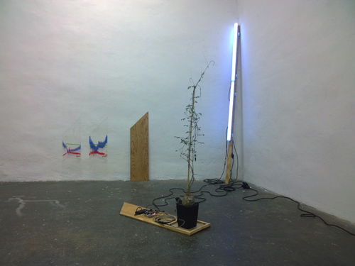
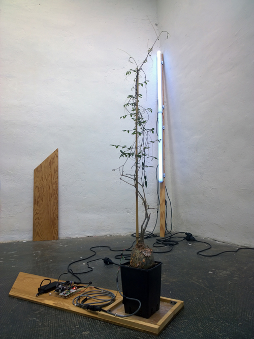

L'installation lumineuse, Variation pour montée de sève se construit autour du rythme physiologique d'une plante, sur le néon notamment, nous assistons à la progression de la sève dans le végétal, une vigne sud-africaine : un Cyphostemma
laza.
L'exposition contre-nature aborde la nature vue par des artistes sous des angles hostiles ou inquiétants, à l’opposé de son idéalisation par l’homme.
« contre nature » s’intéresse à des formes naturelles inconnues, vivantes,
autonomes, imaginées, entrant parfois en conflit avec l’homme et son emprise sur la terre, une nature contre-nature.
